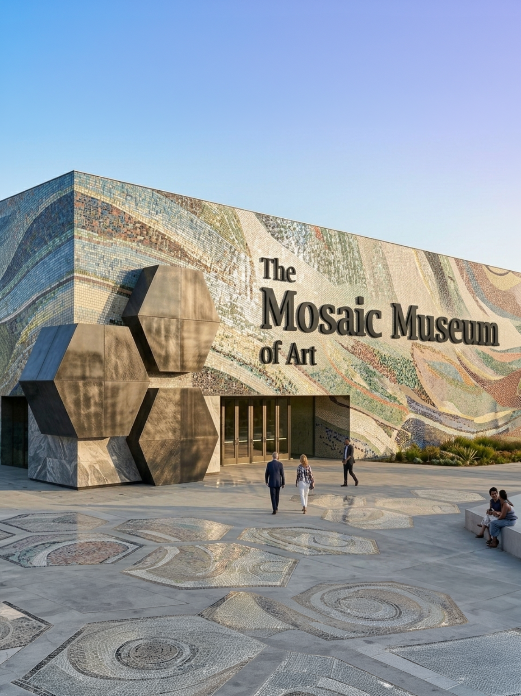

About Us

About the Organisation: Museum Exhibit Companion was created to make exhibitions more accessible and engaging by reducing information overload while preserving depth. It is guided by values of clarity, inclusivity, and layered learning, helping visitors connect with content at their own level.
About the Team: Team 2, Andrew Graham, Mia Wang, Rowan Lea, Seven Liu, and Toby Childs, brings together strengths in design, visual communication, and research. The team conducted observation and discovery work in real museum-like environments to understand how visitors move, engage, and become overwhelmed. By combining user research with design thinking, they developed a companion that balances educational depth with ease of use. Their work focuses on creating accessible media and meaningful content that supports children, casual visitors, and more knowledgeable audiences.